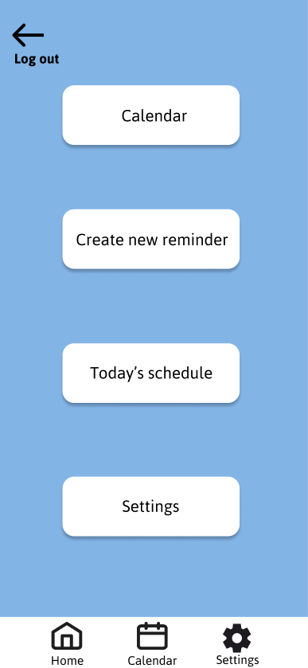
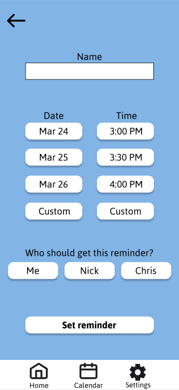
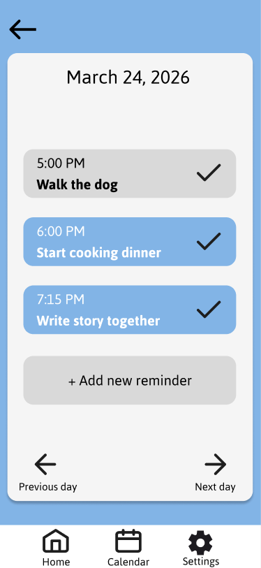
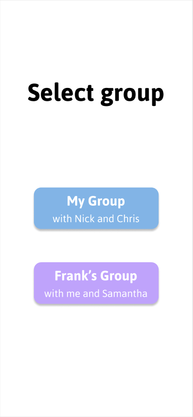
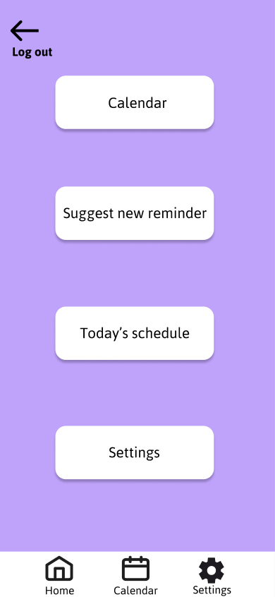
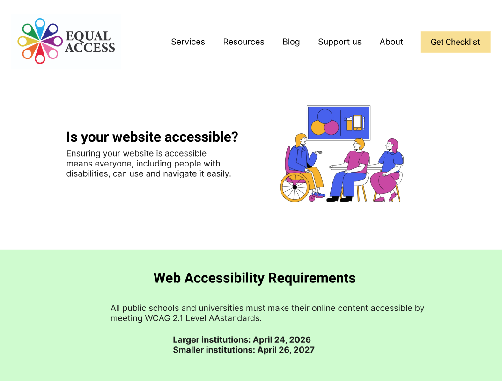

Sun and Moon Bed and Breakfast

A client renting out rooms in their large house as a BNB
wanted me to create a website that would allow users to book
their stays. Aside from this primary functionality,
the only
other thing they specifically asked for was the orange and blue
color scheme, leaving much of the decision-making to me.
This meant there would be extra work, but I didn't want to
significantly increase the turnaround time, so I essentially
improvised the design as I went along, going with
whatever
seemed to make the most sense. However, this instinct did not
always turn out to be right, so I put more of a thinking cap on
in the later parts of the development.
In the end, this website's design was finalized by adhering to the principle of what users need the most being put out in front; I make sure to not bury important information.
So, if you know you want a custom website or app but don't have much of a vision for what it will look like, no problem!
Roommate Reminders





This mobile app was my idea, rather than a commission from
a client. One day, I figured that reminder apps could be
more than just
the basics. I thought "What if you could
more precisely organize people into groups and have more
options with the who and what?"
So that's what this app does. You log into a personalized
group where you could be either an admin or a limited user;
with the former role, you can
make a schedule, remove
reminders, mark them complete, etc. but as a limited user,
any suggestions you have must be approved by the admin(s).
I created these two roles
because I don't think everyone
wants to be responsible for scheduling, and I figured that
the limited role could be good for families with children.
This app also includes features such as the reminder creation
tool keeping track of what is most commonly set, allowing for more
convenience, and if a certain reminder does not apply to any
specific members of the group, it can be told to not notify them.
Interested in this app? You can download it on Google Play and on the App Store!
Equal Access

A website dedicated to helping other web designers ensure
accessibility for their website. The easiest feature to use
would likely be the interactive checklist, which allows
users
to see what features we recommend and mark them done.
Unlike the other two projects, this one was collaborative.
Teaming up with Ilya Kalinin and Kaoru Sato Dugas, I was able to
allow them most of the creative decisions
as my primary role was
to ensure that the website was ready to go. I arranged and
conducted usability tests with people from outside of the group,
bringing in useful feedback that helped us finish the project.